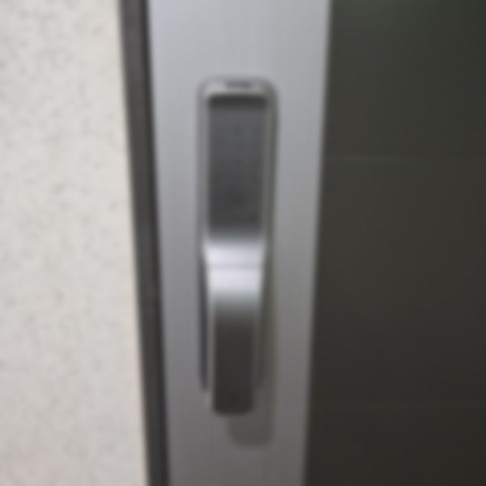

교체를 고민할 때
- 이사 와서 전에 살던 분이 쓰던 도어락을 그대로 쓰는 경우
- 버튼 반응이 늦거나 오작동이 잦은 경우
- 번호키를 지문·카드 방식으로 바꾸고 싶은 경우
- 부품을 구하기 어려운 오래된 제품인 경우
기존 타공을 최대한 활용
가능하면 기존 구멍을 그대로 쓰는 제품으로 교체해 문에 새 구멍을 내지 않습니다.
맞지 않을 때는 미리 설명드리고 동의를 받은 뒤 작업합니다.
수리로 되면 수리를 권합니다
교체 문의를 주셔도 점검해 보고 간단한 수리로 해결되면 수리를 먼저 안내합니다.
불필요한 교체를 권하지 않습니다.
진행 순서
- 전화 상담상황과 위치를 말씀해 주세요
- 상황 확인문 종류와 증상을 먼저 확인합니다
- 현장 출동도착 전 미리 연락드립니다
- 비용 안내·동의작업 전 비용을 먼저 안내합니다
- 작업·점검작업 후 정상 작동을 확인합니다
자주 묻는 질문
문을 끝내 못 열면 비용을 내야 하나요?
도어락 개방에 실패하면 비용을 받지 않습니다. 작업 전에 비용을 먼저 안내하고, 동의하신 뒤에 시작합니다.
밤늦게나 새벽에도 출동하나요?
24시간 운영합니다. 늦은 시간이어도 전화 주시면 바로 출동 가능 여부를 알려드립니다.
출동 지역은 어디까지인가요?
서울·경기 전 지역으로 출장합니다. 수원·화성·용인·오산·성남은 동네별로 따로 안내하고 있습니다.
문을 열 때 문이나 도어락이 망가지지 않나요?
손상이 적은 방법부터 차례로 시도합니다. 부득이하게 부품을 바꿔야 할 때는 미리 설명드리고 동의를 받습니다.